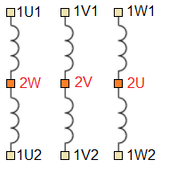
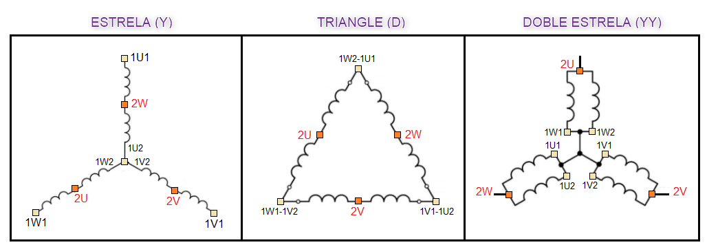
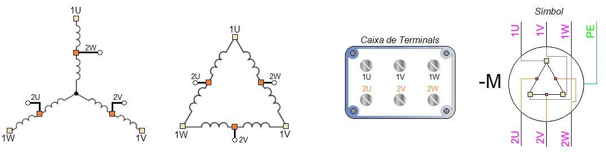

| Un motor Dahlander és un motor d'inducció amb rotor de gàbia d'esquirol que és capaç de variar el seu nombre de pols (i per tant, la seua velocitat) modificant internament les connexions entre els terminals de les tres bobines del motor. |
Robert Dahlander va ser un enginyer suec que va inventar en 1897 una configuració elèctrica per poder canviar el nombre de pols en un motor d'inducció i per a això se li va atorgar una patent juntament amb el seu company de treball Karl Arvid Lindström. La nova connexió es va denominar "connexió *Dahlander" i un motor amb aquesta configuració s'anomena "motor Dahlander" en honor al seu inventor.
Per poder reduir el nombre de pols a la meitat (la velocitat per tant, es doblarà), Robert Dahlander va afegir un nou terminal a cadascun dels tres bobinats del motor dividint-los d'aquesta manera en dues parts iguals(veure imatge):

Amb aquests nou terminals les connexions elèctriques que es poden fer són:

En un motor Dahlander les bobines venen de fàbrica connectades en estrela o en triangle i els seus extrems 1U1, 1V1 i 1W1 o 1U, 2V I 2W (ja que no cal distingir-los dels altres extrems) es col·loquen en la part superior de la caixa de terminals (velocitat lenta - nombre de pols=p). En canvi, els punts mitjans 2U , 2V i 2W (velocitat ràpida - nombre de pols = p/2) es col·loquen en la part inferior de la caixa de terminals (velocitat ràpida- nombre de pols=p/2).

Un motor Dahlander admet únicament dos configuracions o modes de connexió i per tant, dues velocitats, una lenta i l'altra ràpida. Les formes de connexió que s'utilitzen per a les dues velocitats d'un motor Dahlander es designen indicant primer la connexió per a la velocitat baixa i després la connexió per a la velocitat alta. L'elecció entre aquestes formes de connexió està condicionada pel tipus de càrrega mecànica que ha de moure el motor. A la pràctica, s'utilitzen aquestes tres connexions:
- Connexió D-YY: quan la càrrega mecànica presenta un parell constant i independent de la velocitat, com succeeix amb: ascensors, grues, ...
- Conexió YY-D: quan la càrrega mecànica presenta una potència constant i independent de la velocitat; es a dir, un parell que disminueix amb la velocitat com succeeix amb: torns, fresadores, …
- Conexió Y-YY: quan la càrrega mecànica presenta un parell variable o quadràtic que augmenta amb la velocitat, com succeeix amb: ventiladors, bombes, ......


| En un motor Dahlander els pols sempre varien en una proporció 1:2 i, per tant, la velocitat ràpida és sempre el doble de la velocitat lenta (2:1). |
Les càrregues de parell constant són aquelles on el parell que ha d'aportar el motor és independent de la velocitat.
Aquest motor està dissenyat perquè la potència romanga constant quan la velocitat es redueixi a un valor baix. Per a aconseguir-ho, és necessari que el parell del motor augmente quan es redueix la seua velocitat. El requisit de potència constant pot visualitzar-se millor en considerar l'operació d'una maquina simple com una premsa perforadora. En aquest cas, per a perforar un forat gran amb un trepant gran, la velocitat ha de ser baixa però el parell requerit és molt alt. Per contra, en perforar un forat xicotet, la velocitat del trepant ha de ser alta però el parell requerit és baix. És a dir, que es requereix que el parell siga alt quan la velocitat és baixa i que el parell siga baix quan la velocitat és alta.